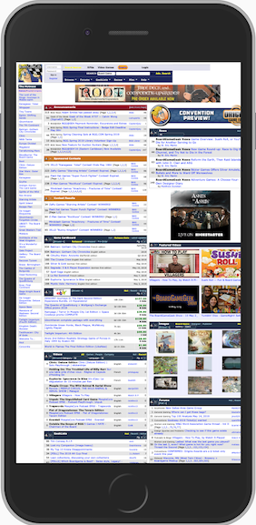
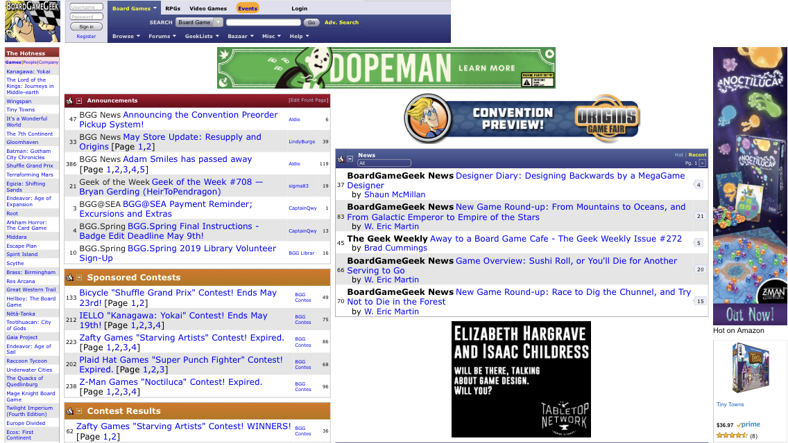
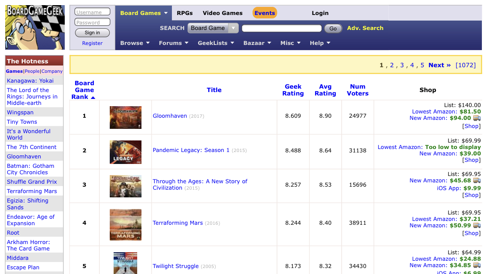
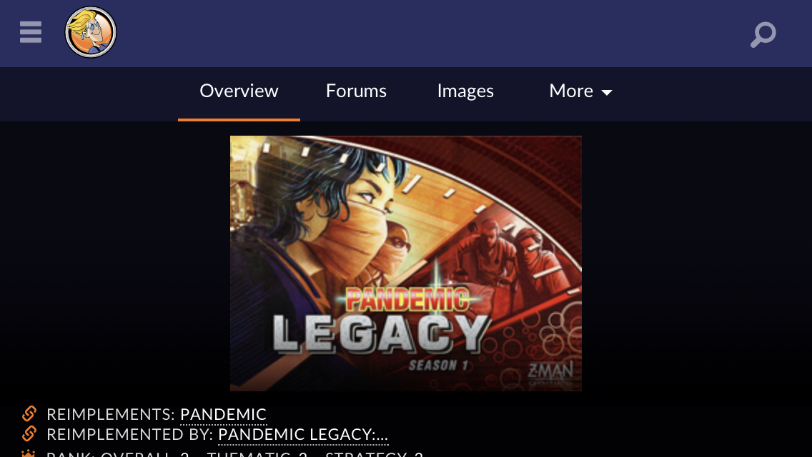
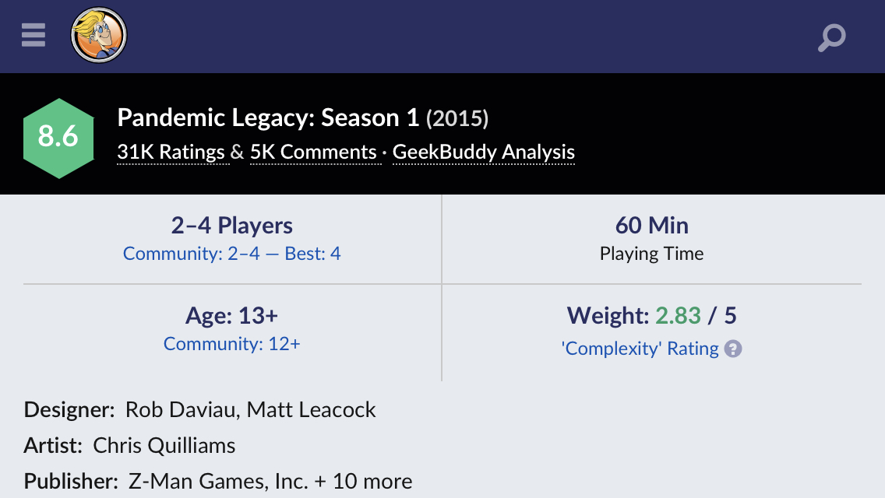
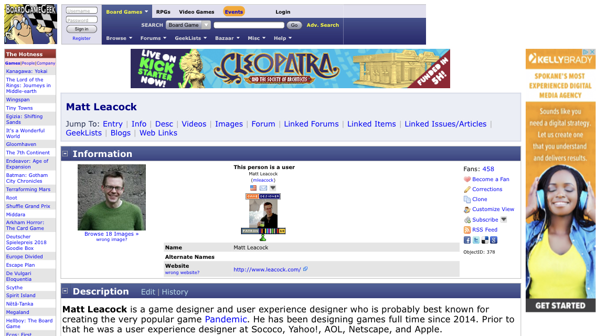

Introduction
This post is a continuation of the usability analysis of the BoardGameGeek website, a popular site among tabletop board game players. Unfortunately, an unplanned-for aspect of this analysis was the fact that major portions of the BoardGameGeek site do not actually have responsive styling. In some cases, as with the front page of the site, the mobile version is identical to how the page appears on a desktop browser.
In order to be consistent with the previous test, the same script was used. It asked the participants to conduct a few tasks on the website while providing a commentary of their experience. The tasks were selected to reflect the sort of things for which a typical user might access the BoardGameGeek website. This included accessing information about specific board games and visiting the GeekStore. In some cases, this presented considerable difficulties due to the size of the text on the mobile device.
 The front page on an iPhone8 in the "wide" orientation.It is important to recognize that all of the participants rotated the device to the "wide" orientation very early on in the test. This was likely motivated by the non-responsive front page. The page became far too difficult to read at full width in the "portrait" orientation. Once rotated to this orientation, all three participants kept the device in the "wide" orientation for the remainder of the test.
The Participants
Consistent with the previous analysis, the participants in this study were people that had some measure of familiarity with tabletop games, the subject of the website, but did not have particular experience with the BoardGameGeek site. All of the subjects understood the basics of tabletop games, the sort of information that can be found on BoardGameGeek.
The First Task: Review the Board Game List
The first task was presented a significant challenge on the mobile platform since the front page of BoardGameGeek is essentially non-responsive. As mentioned in the previous post, the most direct way to find the list is to click Games link from under the Browse menu; this task was chosen because of the difficulty in finding the link. Being confined to a small mobile device significantly increased the difficulty of the task. Finding the link leading to the board games list was also more difficult than it had been for participants in the desktop study. None of the participants were able to locate the list without prompting.
Because the menus in the top navigation bar were designed for desktop use, all three participants took some time to even notice that they were there. Reading the menus required zooming in (a gesture normally referred to as "spread" on Android devices or "pinch out" on iOS devices). Once zoomed in, it became easier to see the menus and identify what was contained within them. [Note: The front page and the games list do not have a viewport meta tag in the HTML.]
 The Top Rated Board Games list as viewed on a mobile device in the "wide" orientation.The Game List was more straightforward, although it was still not designed for mobile devices. None of the participants commented on the excessive amount of padding and space used in the table entries. It is not clear if the different in text size was a feature of the (mobile) browser or an element of the page's CSS. [Note: The CSS for the page is extremely difficult to navigate.]
The Second Task: Look at a Game Page
The game page presented a surprise for all three participants: it seemed as if there were some attempt at responsive design. Two of the participants were immediately confused as to why the game page would look alright on a mobile device but the front page and games list were both so poorly executed. [Note: Unlike the previous two pages, the game page has a viewport meta tag and responsive styling.]
 The Mobile version of the Pandemic Legacy Season 1 Game Page.The mobile styling of the page made it much easier for participants to find specific information about the page. Perhaps the most notable different from the desktop version was the question regarding "Complexity Rating." There was no confusion between Complexity Rating and Weight and all three participants were able to quickly identify the "tooltip" pop-up in order to determine what the number meant. One participant commented that it was easy to find because the block of information that contained the complexity rating (and the tooltip) were prominently displayed.
 These numerical parameters were much easier to see in mobile form.In contrast, the game designer was a return to the original stylings. One of the participants expressed a great deal of surprise over this, having come to appreciate the usability of the game page.
 The Designer Page for Matt Leacock, with no thought given to responsive design.The task of identifying other games developed by the designer appeared to be more challenging for these participants. All three of them stopped scrolling down the page prior to arriving at the "Linked Items" section of the page. One felt that wherever the information was, they must have already missed it; they believed that something as important as a list of games designed by a designer would be near the top of the page. Once prompted, the participant was surprised to find that not only was it so far down the page but that it was not even labelled.
The Third Task: The GeekStore
The initial task of finding the GeekStore presented challenges to the participants that had not been present for those that worked with the desktop version of the site. Because this task comes after looking at the designer page, this meant that the participants were trying to find the link to the GeekStore within the non-responsive version of the site. The small size of the interface created challenges.
One unique problem that occurred seems to have been caused by the layering of the navigation menu over other content. After being told where to find the link for thee GeekStore, one participant tried to click on the link in the drop-down navigation menu and was sent to a Kickstarter page. After three attempts, I had the participant reload the page. It appears that the finger press was activating the advertising banner behind the drop-down menu and redirecting to the advertising destination instead of the GeekStore.
The front page for the GeekStore page on mobile.Another surprising transition: the GeekStore has clearly had mobile stylings applied. One participant actually questioned whether or not the GeekStore was even hosted by the BoardGameGeek website or if it was a separate site altogether given how dramatically the style changed. It was relatively straightforward for all fo the participants to browse through the store and determine what sorts of items were sold there.
Conclusions
As the website BoardGameGeek was chosen without consideration for mobile usability, the mobile portion of this test was frustrating for the participants and, to a lesser extent, myself. Accessing a desktop webpage on mobile is always a challenge. One participant commented that they would likely stopped using the website had it not been part of a formal test. According to the BoardGameGeek website, their site has been undergoing "renovation" since 2015. Although the game page shows the results of this renovation, the rest of the website remains in a condition that one participant described as "probably unusable."